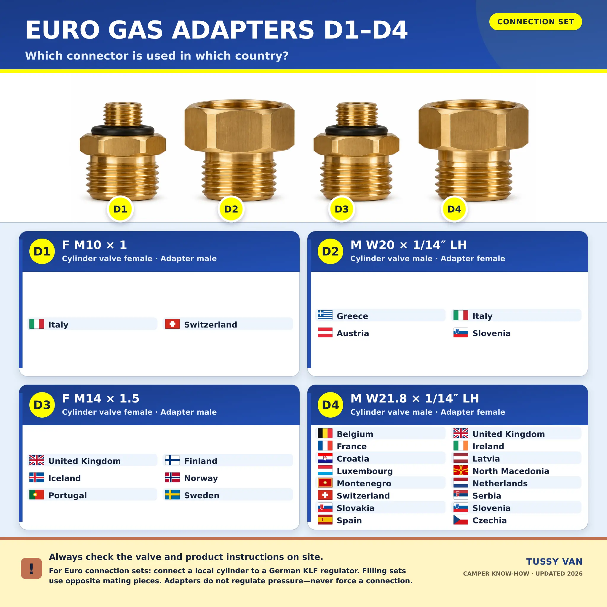

Gas cylinder adapters in Europe: Which connector fits in which country?
You are travelling through Europe, your German gas cylinder is empty, and the replacement in the local shop looks familiar—except for its valve. This is exactly what Euro adapters are intended for. But D1, D2, D3 and D4 are not four magic universal plugs. The first question is whether you want to connect a foreign cylinder to your camper system or have a German cylinder filled by an authorised filling station.

First decide: withdrawal set or filling set?
The names sound almost identical, but the two products perform different tasks. A withdrawal or connection adapter connects a gas cylinder bought or rented in the country you are visiting to a German pressure regulator. Gas then flows from the foreign cylinder into your camper installation. A filling adapter, on the other hand, connects a German cylinder to the equipment at an authorised European filling facility.
The labels D1 to D4 are used for both purposes. Their male and female threads are mating counterparts, however. It is therefore not enough to order something marked “D4”. The packaging must also say clearly whether it is intended for withdrawal/connection or filling. A filling connector is not a withdrawal connector, even when the two pieces look very similar.

The well-known ACME, Dish, bayonet and Euronozzle filling adapters are another category again. They are used with permanently installed LPG tanks or approved refillable LPG cylinders. Cartridges covered by EN 417 also form a separate system. The D1-to-D4 adapters discussed here do not replace tank adapters, a pressure regulator, a high-pressure hose or a gas filter.
D1 to D4 at a glance
The thread details below describe the filling-station side of a widely used Euro filling set for German KLF cylinders. “LH” means left-hand thread. A withdrawal set uses the appropriate mating connector, so always follow the marking and instructions for the exact product in your hand.
M10 × 1
Female thread on the filling connector
W20 × 1/14″ LH
Male, left-hand thread
M14 × 1.5
Female thread on the filling connector
W21.8 × 1/14″ LH
Male, left-hand thread
Country table: Which gas adapter is commonly used where?
The main assignments in this table follow the current manufacturer information for the GOK Euro set. Where more than one adapter is shown, multiple cylinder systems are in circulation. The extra notes highlight countries where the supplier or region often makes a difference. The country name alone is never as reliable as the marking on the valve of the cylinder you actually plan to use.
| Country | Common adapter | What to check |
|---|---|---|
| 🇦🇹 Austria | D2 | Other compatible cylinder systems are also in use. |
| 🇧🇪 Belgium | D4 | Check the supplier and the individual cylinder. |
| 🇭🇷 Croatia | D4 | Ask about acceptance and the cylinder's inspection date first. |
| 🇨🇿 Czechia | D4 | The valve marking remains decisive. |
| 🇩🇰 Denmark | D3 or D4 | Depends on the cylinder system; do not choose by flag alone. |
| 🇪🇪 Estonia | often D4 | Compare the local valve before buying. |
| 🇫🇮 Finland | D3 | Cylinders may only be filled by an authorised facility. |
| 🇫🇷 France | D4 | A local exchange cylinder and withdrawal adapter is often easier. |
| 🇩🇪 Germany | usually no D adapter | A German KLF cylinder and German regulator normally connect directly. |
| 🇬🇷 Greece | D2 | The W20 left-hand thread is common. |
| 🇭🇺 Hungary | often D4 | Check that the local cylinder uses the common connector system. |
| 🇮🇸 Iceland | D3 | Plan your gas supply before long, remote stages. |
| 🇮🇪 Ireland | D4 | Match the supplier's cylinder to your regulator connection. |
| 🇮🇹 Italy | D1 or D2 | Several systems exist; older tables may show additional variants. |
| 🇱🇻 Latvia | D4 | Confirm the valve type on the cylinder itself. |
| 🇱🇺 Luxembourg | D4 | Some exchange systems may not need an adapter. |
| 🇲🇪 Montenegro | D4 | Check local availability before departure. |
| 🇳🇱 Netherlands | D4 | German cylinders are not exchanged everywhere. |
| 🇲🇰 North Macedonia | D4 | Some manufacturer lists still use the former name “Macedonia”. |
| 🇳🇴 Norway | D3 | An additional supplier-specific adapter may be required. |
| 🇵🇱 Poland | often German KLF | Frequently usable without a D adapter, but check the supplier. |
| 🇵🇹 Portugal | D3 | Plan for a local rental cylinder and withdrawal adapter. |
| 🇷🇸 Serbia | D4 | Confirm the connector and permitted filling procedure locally. |
| 🇸🇰 Slovakia | D4 | Inspect the thread and seal. |
| 🇸🇮 Slovenia | D2 or D4 | More than one system is commonly encountered. |
| 🇪🇸 Spain | D4 | The cylinder collar can require an additional suitable connection solution. |
| 🇸🇪 Sweden | D3 | A further local adapter may be needed for some suppliers. |
| 🇨🇭 Switzerland | D1 or D4 | Threads that look similar are not automatically compatible. |
| 🇬🇧 United Kingdom | D3 or D4 | Different supplier systems are used in England, Scotland, Wales and Northern Ireland. |
Is your destination missing? That does not mean LPG is unavailable there. It only means that the four-piece Euro set does not support a reliable blanket recommendation. Ask the local cylinder supplier about the connector, regulator pressure, exchange system and permitted use in a leisure vehicle.
Why no country list can be 100 per cent certain
Gas cylinders are not defined by national borders alone. Large and small cylinders, propane and butane, regional brands, exchange schemes, and older or newer valves can all use different connectors. Italy, Switzerland, Slovenia and the United Kingdom are good examples: manufacturer tables list more than one D adapter for these destinations. Picking the first adapter shown against a flag can lead to a cross-threaded or leaking connection.
The safe order is therefore simple: inspect the valve first, compare its marking or thread specification with the instructions for your set, and then confirm that the component is intended for withdrawal or filling. Never force an adapter to fit. Extra sealing tape, unsuitable O-rings and homemade intermediate fittings have no place in an LPG installation.
A safe sequence when changing cylinders
- Switch off every gas appliance, keep ignition sources away and close the cylinder valve.
- Work only in a well-ventilated cylinder compartment and fully depressurise the connection.
- Check the valve, adapter and seal for dirt, cracks, deformation or missing parts.
- Fit the explicitly specified withdrawal adapter according to its manufacturer's instructions. Do not force a left-hand thread in the wrong direction.
- Connect the correct pressure regulator or specified high-pressure hose. The adapter itself does not regulate pressure.
- Open the valve slowly and test every newly joined point with an approved leak-detection product.
- If bubbles appear or you smell gas, close the valve immediately, ventilate and do not use the system. Never test for leaks with a flame.
Having a German cylinder filled abroad
A Euro filling set is not permission to fill a portable exchange cylinder yourself at an automotive LPG pump. A conventional German cylinder may only be filled by a facility authorised for that work and in accordance with local rules. The facility decides whether it can accept your cylinder. Its condition, identification, inspection date and permitted fill quantity all have to be correct. After filling, the connector is removed; it must not remain on the cylinder as a permanent fitting.
If the filling station refuses the cylinder, a locally rented or exchanged cylinder with the correct withdrawal adapter is often the better solution. For extended travel, a professionally installed and approved refillable LPG cylinder can also make sense. That setup requires the correct vehicle filling adapters and a system designed for the purpose—not the D1-to-D4 filling set described here.
What belongs in a sensible LPG travel box?
- the clearly labelled withdrawal set appropriate for your route,
- the manufacturer's original instructions, saved digitally and on paper,
- undamaged replacement seals made specifically for that set,
- approved leak-detection spray,
- work gloves and only the tool specified by the manufacturer,
- photos of the markings on your own regulator, hose and cylinder,
- the address of an LPG specialist or camping dealer near your next destination.
Conclusion: The table is the starting point, not the final check
The right Euro set makes gas planning much easier on many European routes. D4 covers a large number of common systems, while D1, D2 and D3 become essential for particular countries and suppliers. Even so, the actual cylinder valve matters more than any flag in a table. Spending five minutes on the thread, seal and instructions is always worthwhile—LPG is a brilliant travel companion, but it is not a place for improvisation.
Sources and data status
Updated September 2026. Technical basis: GOK manufacturer information and assembly guidance, plus the connector standard DIN EN 15202. Camper LPG safety information: DVGW.
See you soon and safe travels,
your Tussy 💛